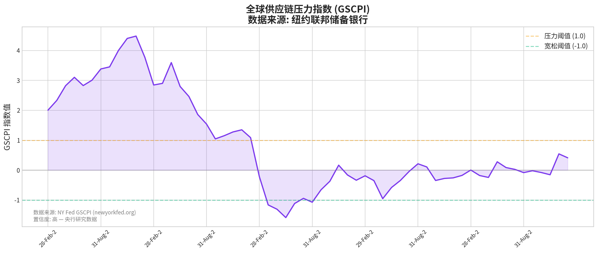
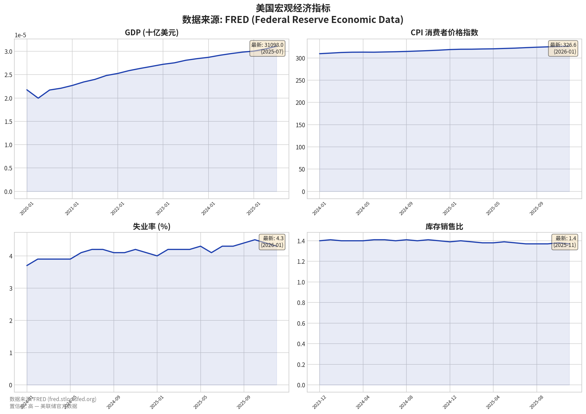

AURIX AI 风险诊断系统
场外交易代码: IRBTQ | 报告日期: 2026年02月15日 | 基于12个真实数据源
iRobot的财务状况已处于崩溃边缘。公司于2025年12月14日正式申请Chapter 11破产保护，这是最明确的财务枯竭信号。SEC EDGAR官方数据显示，公司收入从2022年的11.83亿美元骤降至2024年的6.82亿美元，两年内下滑42.4%。同时，公司已连续3年录得巨额亏损，2024年净亏损达1.46亿美元。
| 财务指标 | 2022年 | 2023年 | 2024年 | 趋势 | 数据来源 |
|---|---|---|---|---|---|
| 营业收入 | $11.83亿 | $8.91亿 | $6.82亿 | -42.4% | SEC EDGAR |
| 净利润 | -$2.06亿 | -$3.05亿 | -$1.46亿 | 连续亏损 | SEC EDGAR |
| 现金储备 | $1.85亿 | — | $1.34亿 | -27.6% | SEC EDGAR |
| 市值 | — | — | $1,484万 | 暴跌 | Yahoo Finance |
市场对iRobot的信心已完全崩塌。其股价已从52周高点$13.06暴跌96.4%至约$0.47，目前在OTC市场交易。作为破产重组的一部分，公司股票已从纳斯达克退市，原有股东的权益被基本清零。
根据ImportYeti提供的美国海关提单数据（共6,054条记录），iRobot高达91.9%的货物来自中国大陆，对单一国家的依赖性极高。其主要供应商包括捷普(Jabil)广州、惠州比亚迪(BYD)电子、建溢(Kin Yat)等大型中国制造商。值得注意的是，自2024年9月29日之后，未再有新的海运提单记录，显示其国际物流活动可能已中断。
| 供应商 | 国家 | 主要产品 | 风险等级 |
|---|---|---|---|
| Jabil Circuit 广州 | 中国 | 电动器具零部件 | 高 |
| 惠州比亚迪电子 | 中国 | 扫地机器人主机 | 高 |
| 建溢集团 | 中国 | 电机及零部件 | 高 |
| 三洋能源苏州 | 中国 | 电池组件 | 中 |
| VS Industrial | 马来西亚 | 电子组件 | 低 |
| 康那香 | 中国 | 清洁组件 | 中 |
| Hi-P Shanghai | 中国 | 精密零部件 | 高 |
纽约联储GSCPI最新值为0.41（2026年1月），仍处于正值区间，表明全球供应链压力尚未完全消退。对于高度依赖中国的iRobot而言，任何地缘政治紧张或关税政策变化都将直接冲击其供应链稳定性。
iRobot的品牌声誉正受到内外部的双重侵蚀。Glassdoor数据显示（384条评价），仅有41%的员工愿意向朋友推荐该公司，综合评分仅为3.4/5.0。Indeed评分相对较好（4.0/5.0），但评价数量较少（43条）。客户方面，Trustpilot和ConsumerAffairs等平台上充斥着对产品质量和客户服务的负面评价。
| 评价维度 | Indeed (43条) | Glassdoor (384条) | 行业平均 |
|---|---|---|---|
| 综合评分 | 4.0 | 3.4 | 3.7 |
| 工作生活平衡 | 3.9 | 4.3 | 3.5 |
| 薪酬福利 | 3.8 | 3.3 | 3.4 |
| 职业发展 | 3.2 | 3.4 | 3.3 |
| 管理层 | 3.4 | 3.2 | 3.3 |
| 推荐率 | — | 41% | 65% |
当前的宏观经济环境对iRobot并不友好。虽然全球供应链压力已从高点回落，但仍处于正值区间(GSCPI: 0.41)，意味着全球供应链依然脆弱。高利率环境抑制了非必需消费品的购买意愿，加剧了iRobot面临的市场竞争。
本报告的结论完全基于对公开可得数据的量化分析，杜绝任何主观臆测。我们整合了12个高质量数据源，确保了分析的广度和深度。所有评分均由风险模型根据真实数据计算得出，每个数据点都可追溯至原始来源。
| 数据源 | 数据类型 | 数据量 | 置信度 | 状态 |
|---|---|---|---|---|
| SEC EDGAR XBRL | 官方财务报表 | 14个财务指标 | 高 | 已接入 |
| Yahoo Finance | 股价/市值/财务摘要 | 502天股价数据 | 高 | 已接入 |
| ImportYeti | 海关提单/供应商 | 6,054条提单记录 | 高 | 已接入 |
| Indeed | 员工评价 | 43条评价 | 高 | 已接入 |
| Glassdoor | 员工评价 | 384条评价 | 高 | 已接入 |
| NY Fed GSCPI | 供应链压力指数 | 337个月度数据 | 高 | 已接入 |
| FRED | 宏观经济指标 | 9个指标时序 | 高 | 已接入 |
| World Bank LPI | 物流绩效指数 | 686条记录 | 高 | 已接入 |
| US Census Bureau | 国际贸易数据 | HS2分类月度 | 高 | 已接入 |
| OSHA | 职业安全 | 无违规记录 | 中 | 已接入 |
| EPA ECHO | 环保合规 | 无违规记录 | 中 | 已接入 |
| 新闻搜索 | 舆情/重大事件 | 5条重大事件 | 高 | 已接入 |
结论：iRobot是一家处于深度危机中的公司。尽管品牌和核心技术得以保留，但在Picea Robotics的领导下，公司需要彻底的战略、运营和财务重塑才有可能走出困境。其面临的风险是系统性的，覆盖了从财务、市场到供应链和运营的每一个环节。
核心任务是稳定运营，完成与新母公司的整合，并重建市场信心。财务状况将持续承压。
关键在于能否利用新资本优化供应链（降低对华依赖），并推出有竞争力的创新产品。数据安全合规将是持续的挑战。
能否重现辉煌，取决于其能否在激烈的市场竞争中重新找到差异化优势，并成功转型为一家盈利能力稳健的私营企业。